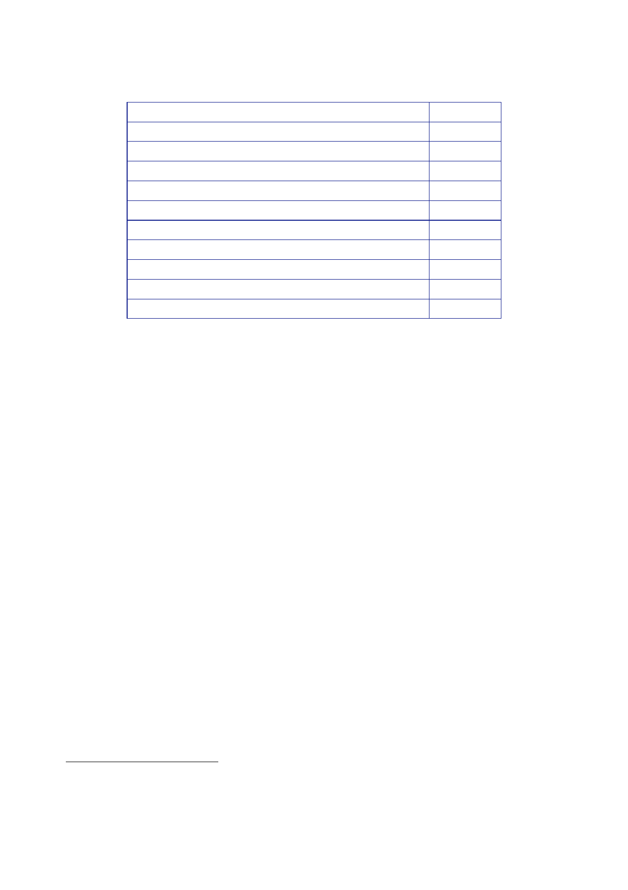

9.3 |
July 2004 to May 2005
Former IGC
Members
SCIRI/Badr
Dawa
Party
Other
Islamist Parties
Kurds
Tribes
Independents
Provincial
Caucuses
Female
Regional
Personalities
Preparatory
Committee Members
19%
6%
3%
7%
17%
7%
8%
8%
25%
10%
8%
109.
The JIC
observed that:
“Although
the process of selecting the Council was far from
democratic,
it nevertheless
produced a body which found favour with the majority
of
conference delegates.”
110.
Established
Shia and Kurdish parties got most of the seats reserved for
political
groups,
while Sunni Arabs were less well represented.
111.
In early
September, Maj Gen Rollo reported that he was:
“…
encouraged by the fact that anti-Muqtada forces and moderates (the
majority)
have been
strengthened by what they consider to be the submission of
Muqtada
al-Sadr to
the rightful religious authority. Should his militia return
arbitrarily to
confrontation,
I am confident that there will be greater resistance from the
Iraqis
themselves,
and greater support to us in acting firmly against threats to
stability.” 50
112.
On 2
September, an assessment of resistance to the coalition in Iraq was
provided
to Mr
Stuart Jack, Head of the FCO Iraq Operations Unit, and Mr David
Richmond, FCO
Director
General Defence and Intelligence.51
It
said:
“… the
Sunni resistance remains the greatest threat to the political
process …
Their movement
is facilitated by US military disengagement from the centres of
key
Sunni cities
(Fallujah, Samarra, Ramadi, Ba’qubah) … Attacks in the Sunni
triangle
and Baghdad
remain at a high level. Fatalities amongst the ISF, who have
assumed
sole
responsibility for policing Sunni city centres, have increased
significantly
since handover.”
50
Minute
Rollo to CJO, 2 September 2004, ‘GOC MND (SE) – Iraq Update – 02
September 2004’.
51
Minute
senior government official specialising in the Middle East to Jack
and Richmond, 2 September
2004,
‘Resistance to the Coalition in Iraq’.
413